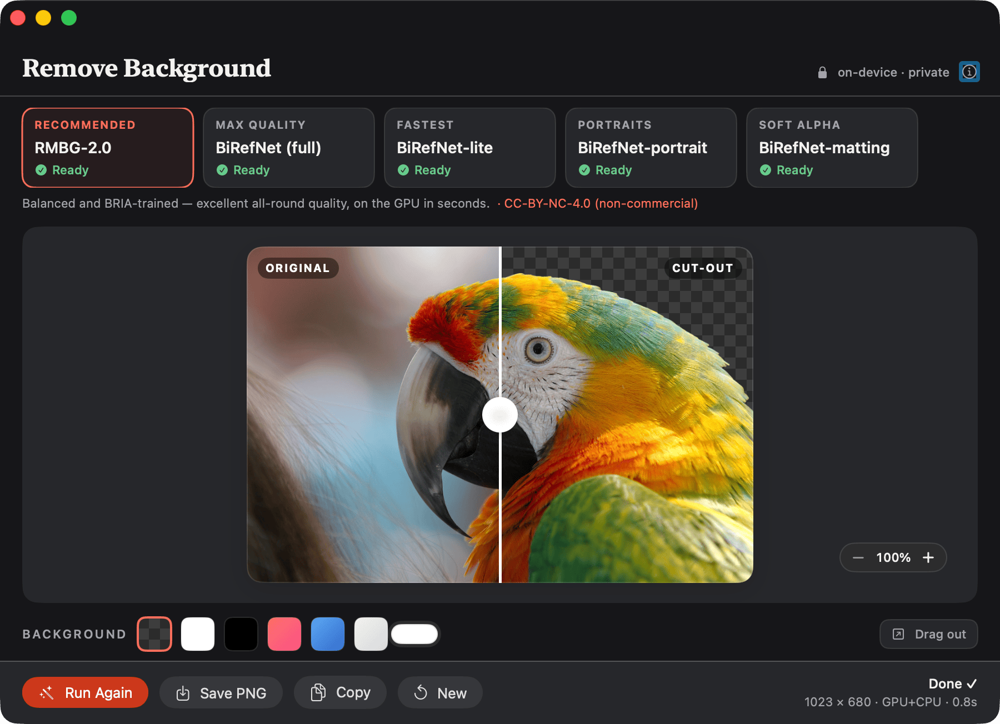
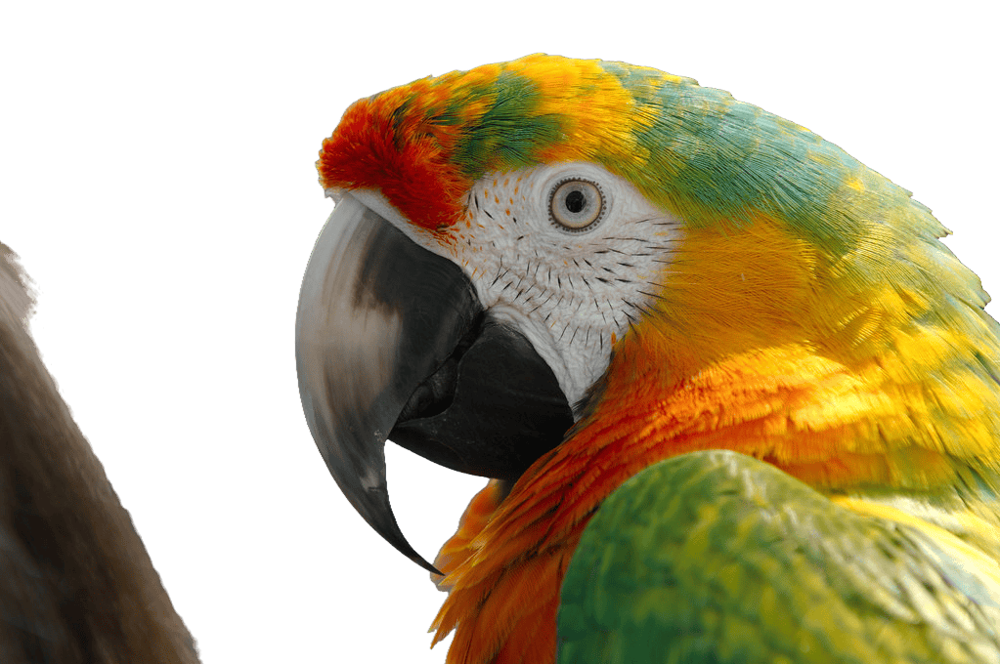

A native macOS app that cuts out subjects with state-of-the-art models — processed locally, in about a second. No upload, no watermark, no sign-up.

Every pixel is processed locally with Core ML / ONNX. Nothing is uploaded, nothing is logged — the app even ships with no model files, fetching them once on first use.
RMBG-2.0, BiRefNet (full · lite · portrait), and a soft-alpha matting model. Pick raw speed or the finest hair-, fur-, and feather-level edges.
A before/after wipe to inspect the cut up close, zoom to check the edges, then drop it on any color — or keep it transparent and drag it straight out.
Drop a whole folder of images, process them all with one click, and export the cut-outs together.

Soft-alpha matting keeps the wispy detail most tools smear away. Inspect it at 100%, then export a clean PNG with real transparency.
# macOS 14+ with Xcode command-line tools git clone https://github.com/emrikol/RemoveBackground cd RemoveBackground/RBGApp ./build_app.sh # builds & installs to ~/Applications